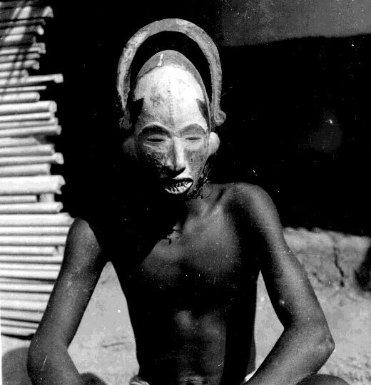

 |
Village
of Umuofia
First Visit
|
In your first visit to Umuofia think of yourself as a thoughtful and open-minded tourist. You want to learn the layout of the village and closely examine the people and objects you find there.
Enter into the Village of Umuofia from the WMU Secondary Worlds website. To simply visit Umuofia you can enter at a "Guest." Proceed first to the Things Fall Apart Room from which you can enter into the "Village Square."
You will want to visit every "room" in the village. For this it may be helpful to study the Village of Umuofia Map. You will also want to look at all of the objects and images in each "room." Learn how to use the "say" command."
Choose three images of people, places, or objects that interest you, carefully study them, and write at least a paragraph about each one. Your paragraph can address these questions:
If you enter the Village of Umuofia at the same time as other students you can share your comments with them using the "say" command.
Some of the "rooms" or objects play traditional West African Music by Yaya Diallo.
For your information, the images in the Village of Umuofia are authentic black and white photos used witih permission from the Jones Photographic Archive of Southeastern Nigerian Art and Culture. You are invited to further explore the images in this free public archive. Some questions to guide your consideration: